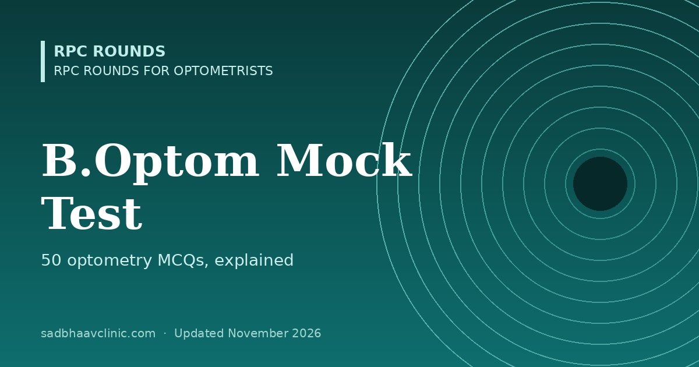

Last updated: November 2026
A 50-question revision mock for B.Optom students and newly qualified optometrists. The questions follow the course from first-year optics to community optometry, and most are the kind of problem you meet in the refraction room or at the dispensing counter.
Write down every topic you got wrong, open its page from the explanation, and tick it off on the subject checklists in RPC Rounds for Optometrists. For calculations, practise with the contact lens calculator and the contact lens quick reference, then take the test again a week later.
More free mocks: all mock tests.
📘 Want more exam-ready material? See Most Commons in Ophthalmology on Kindle, or browse all my books.
Looking for an eye specialist in Ahmedabad? Learn about our Eye Department or book a consultation with Dr. Dhaval Patel.